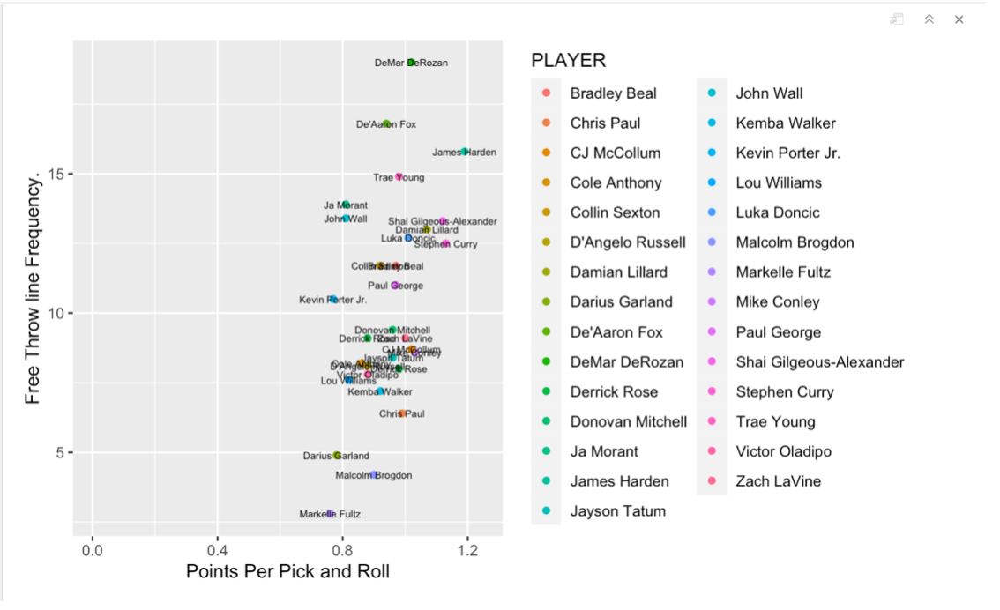
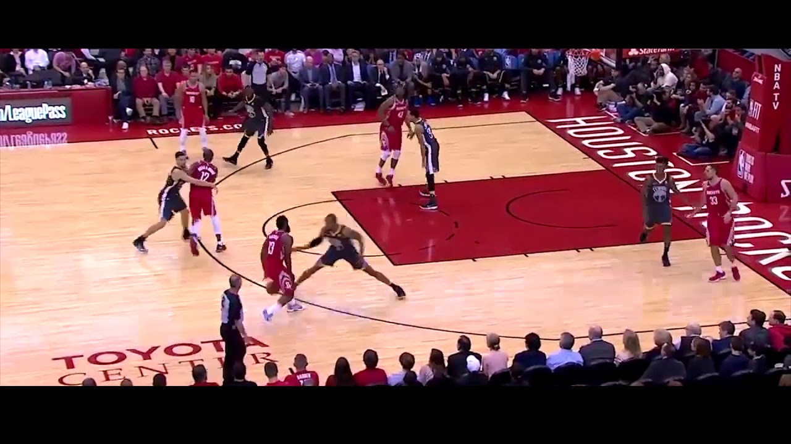
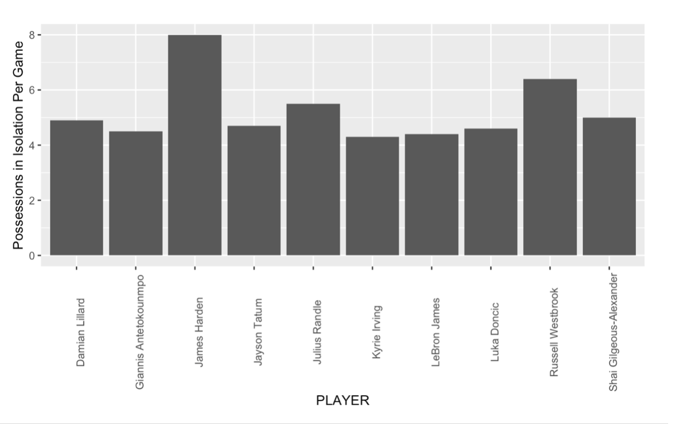
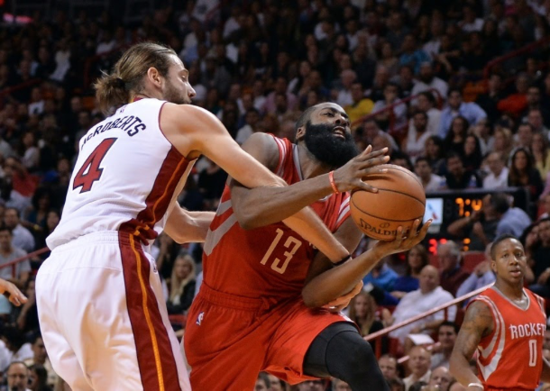
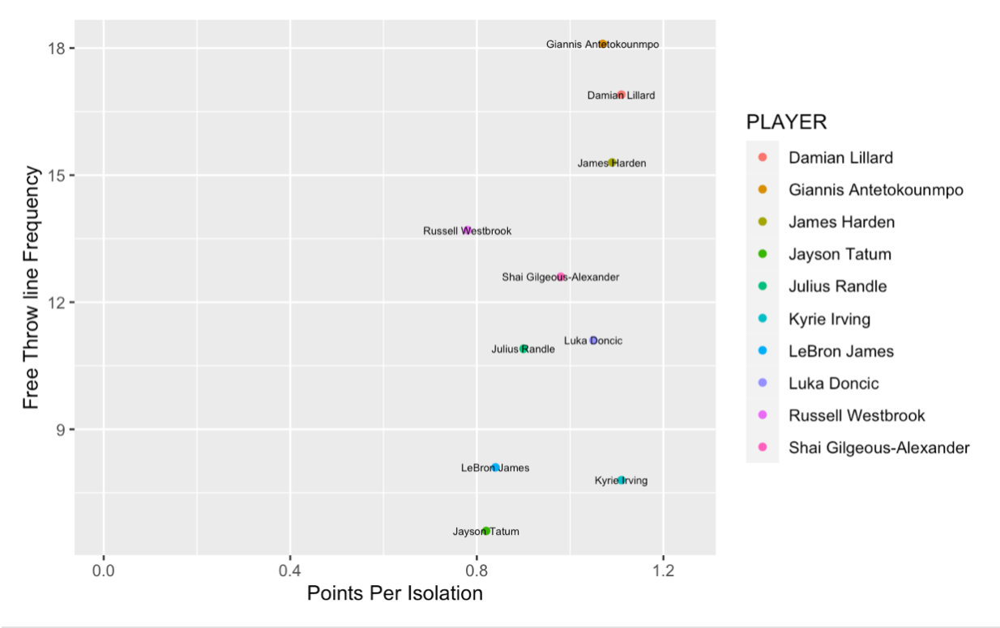
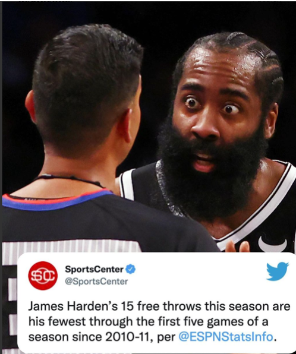

No More Foul Play
By Nathan Mehta | December 4th, 2021

In a preseason game on October 12th in Philadelphia, Brooklyn Nets superstar James Harden tried to create contact to coax a foul call out of the referee. Only, this time it wasn’t the result he has been accustomed to for the past 13 years: The referee didn’t blow the whistle, leaving Harden appalled. He was seen pleading with the official in a fit of confusion. The NBA’s new rules on shooting fouls will shape the game in new ways by directly affecting the output of the league’s top scorers such as Harden.
NBA star James Harden is known for a lot of things: His beard, the “When mom makes pizza rolls” meme, and most of all, his dexterity on a basketball court.
Harden has led the NBA in scoring three times, including 2018 when he averaged a whopping 36.1 points per game. Judging by his statistical output, he makes a convincing case for the most prolific scorer in NBA history. However, the manner in which these points come about has incited fervent debate over the legitimacy of Harden’s play style.
You might hear a passionate fan yell at the T.V as Harden shoots two free throws, “That’s not a foul!! He’s ruining the game!”
These angry fans are referring to Harden’s notorious use of “foul baiting”, where he leans into defenders to coerce foul calls from referees, and shoot two easy free throws. Some call it a skill, some call it cheap points. The interpretation varies, depending on the fanbase. Regardless, James Harden has made a living off of these tactics, perfecting the art of leaning into the body of the defender just as they think to reach into the cookie jar to steal the ball.
Is this beneficial to the integrity of basketball? Some say it’s an abuse of the rules, moving the game away from its status as a showcase of the fantastic athleticism of stars like Michael Jordan or LeBron James, and towards a slower game inundated with fouls and free throws.
Apparently, the NBA agrees with this conclusion. This years changes in regards to drawing shooting fouls are described by @NBAOfficial on Twitter as follows:
For the 2021-22 NBA season, there will be an interpretive change in the officiating of overt, abrupt or abnormal non-basketball moves by offensive players with the ball in an effort to draw fouls.
If the offender veers off course in an abrupt manner into a defender, this will be a no-call or an offensive foul, depending on the contact level
If the offensive player leans into the defender at an abnormal angle, over-extends a body part, or uses their off arm to create contact: this can also be an offensive foul.
All of these changes seem to be in direct response of players who engage in foul baiting, primarily Harden. The free-throw line is the easiest way to accrue points in a basketball game, provided that you can shoot. This is in a way self-evident given that the word “free” is in it. Given that Harden has a career 85% success rate at the line, the points can especially be described as “free” for him. To show the value of a free throw versus other shots: a 75% free throw shooter averages 1.5 points per free-throw shot. This is equivalent to the points per shot of a 50% 3-point shooter (an astronomically high percentage)
Harden led the league in free throws per game 6 years in a row, from 2013-2019. In those years, he cleared the runner-up in free-throw makes by an average of 1.33 made free throws per game. To give some context for NBA historians, in 2013, Carmelo Anthony was second in scoring average. In other words, Harden’s reign as the king of volume free-throw shooting has lasted a good while.
Most of the calls Harden cajoles from the refs are off of pick and rolls and/or Isolation plays. When in a pick-and-roll set, the on-ball defender often traverses over the screen, at which point Harden creates contact:
This lean into the defender off of a screen is exactly the type of play that the league hopes to mitigate with the new rules. Moreover, this is reflected in the clip I showed at the start of this story, Harden failing to receive the call he has gotten hundreds of times.
Nobody utilizes contact off of pick and roll sets like James Harden. When the on-ball defender creeps up to step over the screen, Harden leans in every time like clockwork. So much so, that I decided to investigate the proportion of his points that was attributable to these types of plays.
The following graph of data from the 2020 season demonstrates NBA players pick and roll points per possession in relation to the amount of those points that are from free throws.
The graph constructed above indicates that those players who are located in the top-right region of the graph score a high amount points per every pick-and-roll, with a large portion of those points coming from free-throws.
From the graph, Harden is located farthest to the right. This means that he scores the most points per pick-and-roll play out of all players in the last season.
In addition, Harden is located in the top region of the graph, demonstrating the role the free-throws play in his scoring prowess, specifically in these pick and roll sets. The only players that have a higher reliance on free-throws in the pick and roll are DeAaron Fox of the Sacramento Kings and DeMar DeRozan of the San Antonio Spurs. Given that Fox and DeRozan are ‘slashing’ guards, the rule changes aren’t expected to affect their playing styles.
Meaning, ‘slashers’ rack up high free-throw numbers by driving hard to the basket, and getting in collisions with defenders.
Therefore, the rule changes are slated to affect one productive scorer on this graph most profoundly: James Harden. Harden, unlike DeRozan or Fox, utilizes angles and leverage over defenders to create foul opportunities, rather than colliding with defenders.
This year, we are destined to see his points per pick-and-roll decrease, given that many of those points are from free-throws that will not be made available this year.
Many of Harden’s free-throws also come from isolation play types, in which he is essentially left alone on an island with his defender:
Here, Harden’s team watches him and basically says, “Here’s the ball, you score”. Harden has been put in isolation sets more than any player :
This data visualized from the 2020-2021 season shows how Harden’s time in isolation dwarfs that of almost all other players, clearing the runner-up (Russell Westbrook) by almost two possessions per game.
Why does Harden spend so much time in these sets? It’s because he produces points at a high volume and efficient rate by utilizing foul calls. He leans in, and sells contact.
This photo is an example of James hooking the arm of the defender, trapping him, and baiting a foul call from the referee.
These techniques (or tricks, depending on your fandom) in isolation specifically, are a pivotal factor in his prolific scoring, year after year.
This visual is from last year again, before this year’s rule changes:
As you can see, Harden is located on the top right portion of the graph once again. This means that he is among the highest producers in isolation scoring, while free-throws are responsible for a high percentage of those said points.
Once again, just as in the analysis of the pick-and-roll data, it seems that Harden will be the main victim out of the players who are in this top right region. As you can see, The other two players near Harden in that top right region, are Milwaukee Bucks star Giannis Antetokounmpo. However, Giannis mostly accrues his high number of foul calls in isolation from being a 7 foot tall freak of nature. The foul rules aren’t designed to cut into the production of Giannis, who will be fouled no matter the rules due to his imposing size.
On the other hand, the new rules such as this one are bound to affect Harden’s isolation scoring:
“If the offensive player leans into the defender at an abnormal angle, over-extends a body part, or uses their off arm to create contact: this can also be an offensive foul.”
This rule seems to refer directly to Harden’s “hooking” techniques in isolation.
Therefore, as less free-throws will be made available to Harden, and given that he relies heavily on the foul whistle as a means of scoring, James Harden’s overall scoring numbers will be significantly lesser than years past, perhaps even lower than 20 points per game. This rule change is already showing its effects through the beginning of the season, with Harden averaging 19 points so far this season, about half of what he averaged in 2018.
The new rules will change the game for the better in the eyes of many, re-emphasizing spectacular shot-making and fast-paced games instead of free-throws. The way that we measure scoring prowess will be changed with the elimination of easy points.
.gif)